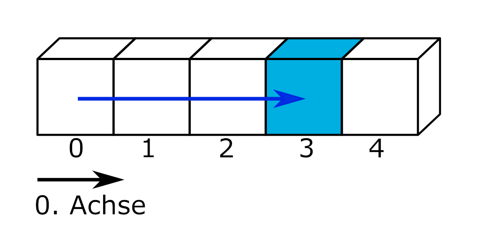

print( *( Augen := [6, 2, 1, 2] ) )
print(f"Das Würfelergebnis an Indexposition 2 lautet: {Augen[2]}")6 2 1 2
Das Würfelergebnis an Indexposition 2 lautet: 1
Bausteine Computergestützter Datenanalyse von Lukas Arnold, Simone Arnold, Florian Bagemihl, Matthias Baitsch, Marc Fehr, Maik Poetzsch und Sebastian Seipel. Methodenbaustein Einlesen strukturierter Datensätze von Maik Poetzsch ist lizensiert unter CC BY 4.0. Das Werk ist abrufbar auf GitHub. Ausgenommen von der Lizenz sind alle Logos und anders gekennzeichneten Inhalte. 2024
Zitiervorschlag
Arnold, Lukas, Simone Arnold, Matthias Baitsch, Marc Fehr, Maik Poetzsch, und Sebastian Seipel. 2024. „Bausteine Computergestützter Datenanalyse. Methodenbaustein Einlesen strukturierter Datensätze“. https://github.com/bausteine-der-datenanalyse/m-Einlesen-strukturierter-Datens-tze.
BibTeX-Vorlage
@misc{BCD-m-einlesen-strukturierter-datensätze-2024,
title={Bausteine Computergestützter Datenanalyse. Methodenbaustein Einlesen strukturierter Datensätze},
author={Arnold, Lukas and Arnold, Simone and Baitsch, Matthias and Fehr, Marc and Poetzsch, Maik and Seipel, Sebastian},
year={2024},
url={https://github.com/bausteine-der-datenanalyse/m-Einlesen-strukturierter-Datens-tze}} Die Bearbeitungszeit dieses Bausteins beträgt circa Platzhalter. Für die Bearbeitung dieses Bausteins werden folgende Bausteine vorausgesetzt und die genannten Bibliotheken verwendet:
Werkzeugbaustein Python
Modul os
Modul Pandas
Modul Matplotlib
Im Baustein werden XY Daten verwendet.
Querverweis auf:
w-NumPy
w-Pandas
In diesem Baustein lernen Sie …
Datensätze unterschiedlicher Struktur und Formate einzulesen, zu bearbeiten und zu speichern.
den Unterschied zwischen identifizierenden und gemessenen Variablen kennen sowie Datensätze ins long- und wide-Format zu konvertieren.
das System tidy data kennen.
typische Probleme beim Einlesen von Datensätzen und Strategien zu deren Lösung kennen.
2016 stellte eine Studie fest, dass ein Fünftel aller wissenschaftlichen Artikel im Bereich der Genetik auf der Grundlage von durch die Tabellenkalkulation Excel verfälschten Daten durchgeführt wurde (Ziemann, Eren, und El-Osta 2016). Genbezeichnungen wie “MARCH1” wurden fälschlicherweise in ein Datumsformat umgewandelt. 2021 wurde diese Schätzung des Anteils betroffener Arbeiten sogar auf 30 Prozent angehoben. (heise online)
Am Beginn der computergestützten Datenanalyse steht das Einlesen von Daten aus Dateien. In der Praxis ist das Einlesen von Daten alles andere als trivial. Daten werden in einer Vielzahl von Dateiformaten gespeichert. Deshalb ist es in der Datenanalyse erforderlich, mit verschiedenen Dateiformaten umgehen zu können: mit wenigen Kilobyte großen Textdateien, offenen und proprietären Formaten gängiger Büroanwendungen und mehreren hundert Megabyte großen Dateien in speziell für den Austausch wissenschaftlicher Daten entwickelten Formaten. Programmiersprachen wie Python und R bringen verschiedene Werkzeuge zum Lesen, Bearbeiten und Speichern von verschiedenen Dateiformaten mit. Spezialisierte Pakete ergänzen den Werkzeugkasten.
Die praktischen Herausforderungen der Datenanalyse beschränken sich jedoch nicht nur auf technische Aspekte. Oftmals bereitet der innere Aufbau von Datensätzen die größten Schwierigkeiten. Ein wichtiger Bestandteil des Einlesens strukturierter Datensätze besteht darin, Fehler im Datensatz zu suchen und ggf. zu bereinigen. Dasu und Johnson schreiben:
“Unfortunately, the data set is usually dirty, composed of many tables, and has unknown properties. Before any results can be produced, the data must be cleaned and explored—often a long and difficult task. […] In our experience, the tasks of exploratory data mining and data cleaning constitute 80% of the effort that determines 80% of the value of the ultimate data mining results.” (Dasu und Johnson (2003), S. ix)
Das Einlesen strukturierter Datensätze umfasst somit den gesamten Prozess des technischen Zugriffs auf Dateien, der Organisation, Fehlersuche und -korrektur sowie des Abspeicherns der Daten in einer für die weitere Bearbeitung geeigneten Form.
Bevor wir uns mit den praktischen Herausforderungen des Einlesens strukturierter Datensätze beschäftigten, werden zunächst einige Merkmale von Datensätzen behandelt, um ein grundlegendes Verständnis der Begrifflichkeiten zu schaffen und den Umgang der in der Basis von Python enthaltenen Werkzeuge zu vermitteln.
Ein Datensatz ist eine Sammlung zusammengehöriger Daten. Datensätze enthalten einer oder mehreren Variablen zugeordnete Werte. Jeder Datensatz besitzt ein technisches Format, eine Struktur, mindestens eine Variable und mindestens einen Wert.
Das technische Format eines Datensatzes gibt vor, mit welchen Mitteln Daten eingelesen, bearbeitet und gespeichert werden können. Einige Beispiele sind:
Druckerzeugnis, z. B. Telefonbuch: manuelles Ablesen von Name und Telefonnummer, irreversible Bearbeitung per Stift
Lochkarte, z. B. Parkschein: Lesegerät erkennt Lochung und gewährt eine Freistunde, irreversible Bearbeitung mit Stanzgerät
Textdatei, z. B. Einwohnerzahl nach Bundesländern: Kann mit einer Vielzahl von Computerprogrammen wie Texteditor, Tabellenkalkulationsprogramm oder Programmierumgebung eingelesen, bearbeitet und gespeichert werden.
Hierarchical Data Format HDF5, z. B. räumliche Daten zur Blitzdichte: benötigt spezialisierte Programme oder Pakete
Datensätze speichern Daten in einer definierten n-dimensionalen Struktur.

slicing von Marc Fehr ist lizensiert unter CC-BY-4.0 und abrufbar auf GitHub. 2024
Die einfachste Form sind eindimensionale Datensätze, die in einer Liste Werte einer einzigen Variablen zuordnen. Eindimensionale Datensätze verfügen lediglich über eine Achse: den Index, über den Elemente angesprochen werden können.

slicing von Marc Fehr ist lizensiert unter CC-BY-4.0 und abrufbar auf GitHub. Die Grafik wurde auf den gezeigten Teil beschnitten und die obenstehende Beschriftung entfernt. 2024
Beispiele eindimensionaler Datensätze sind ein Einkaufszettel oder die Urliste eines Würfelexperiments. Über den Index kann beispielsweise das Würfelergebnis an der Indexposition 2 ausgegeben werden.
print( *( Augen := [6, 2, 1, 2] ) )
print(f"Das Würfelergebnis an Indexposition 2 lautet: {Augen[2]}")6 2 1 2
Das Würfelergebnis an Indexposition 2 lautet: 1Maya und Hans haben je sechs Mal einen Würfel geworfen und ihre Wurfergebnisse in einer .txt-Datei protokolliert. Wir wollen mit die Dateien mit Python auswerten, um zu bestimmen, wer von beiden in Summe die höchste Augenzahl erreicht hat.
| Daten | Dateiname |
|---|---|
| Würfelergebnisse Maya | dice-maya.txt |
| Würfelergebnisse Hans | dice-hans.txt |
Um mit Python auf eine Datei zuzugreifen, muss diese fürs Lesen oder Schreiben geöffnet werden. Dazu wird in Python die Funktion open verwendet. Diese nimmt zwei Argumente, den Pfad der Datei und den Zugriffsmodus, an und liefert ein Dateiobjekt zurück. Aus dem Dateiobjekt werden dann die Inhalte der Datei ausgelesen.
Der lokale Dateipfad wird ausgehend vom aktuellen Arbeitsverzeichnis angegeben.
pfad_maya = "skript/01-daten/dice-maya.txt"
pfad_hans = "skript/01-daten/dice-hans.txt"Der Pfad des aktuellen Arbeitsverzeichnisses kann mit dem Modul os mittels os.getcwd() ermittelt werden (hier ohne Ausgabe). Mit os.chdir('neuer_pfad') kann das Arbeitsverzeichnis ggf. gewechselt werden. Die korrekte Formatierung des Pfads erkennen Sie an der Ausgabe von os.getcwd().
import os
print(os.getcwd())Als Zugriffsmodus stehen unter anderem folgende Optionen zur Verfügung:
| Modus | Beschreibung |
|---|---|
r |
lesender Zugriff |
w |
Schreibzugriff, Datei wird überschrieben |
x |
Erzeugt die Datei, Fehlermeldung, wenn die Datei bereits existiert |
a |
Schreibzugriff, Inhalte werden angehängt |
b |
Binärmodus (z. B. für Grafiken) |
t |
Textmodus, default |
Die Zugriffsmodi können auch kombiniert werden. Weitere Informationen dazu finden Sie in der Dokumentation. Sofern nicht im Binärmodus auf Dateien zugegriffen wird, liefert die Funktion open() den Dateiinhalt als string zurück.
Im Lesemodus wird ein Datenobjekt erzeugt.
daten_maya = open(pfad_maya, mode = 'r')
print(daten_maya)<_io.TextIOWrapper name='skript/01-daten/dice-maya.txt' mode='r' encoding='cp1252'>Wenn das Datenobjekt daten_maya der Funktion print() übergeben wird, gibt Python die Klasse des Objekts zurück, in diesem Fall also _io.TextIOWrapper. Diese Klasse stammt aus dem Modul io und ist für das Lesen und Schreiben von Textdateien zuständig. Ebenfalls werden der Dateipfad, der Zugriffsmodus und die Enkodierung der Datei ausgegeben. Sollte die Enkodierung nicht automatisch als UTF-8 erkannt werden, kann diese mit dem Argument encoding = 'UTF-8' übergeben werden.
daten_maya = open(pfad_maya, mode = 'r', encoding = 'UTF-8')
print(daten_maya)<_io.TextIOWrapper name='skript/01-daten/dice-maya.txt' mode='r' encoding='UTF-8'>Die Attribute der Datei können mit entsprechenden Befehlen abgerufen werden.
print(f"Dateipfad: {daten_maya.name}\n"
f"Dateiname: {os.path.basename(daten_maya.name)}\n"
f"Datei ist geschlossen: {daten_maya.closed}\n"
f"Zugriffsmodus: {daten_maya.mode}")Dateipfad: skript/01-daten/dice-maya.txt
Dateiname: dice-maya.txt
Datei ist geschlossen: False
Zugriffsmodus: rUm den Dateiinhalt auszugeben, kann das Datenobjekt mit einer Schleife zeilenweise durchlaufen und ausgegeben werden. (Die Datei dice-maya hat nur eine Zeile.)
i = 0
for zeile in daten_maya:
print(f"Inhalt Zeile {i}, mit {len(zeile)} Zeichen:")
print(zeile)
i += 1Inhalt Zeile 0, mit 28 Zeichen:
"5", "6", "2", "1", "4", "5"Dies ist jedoch für größere Dateien nicht sonderlich praktikabel. Die Ausgabe einzelner Zeilen mit der Funktion print() kann aber nützlich sein, um die genaue Formatierung der Zeichenkette zu prüfen. In diesem Fall hat Maya ihre Daten in Anführungszeichen gesetzt und mit einem Komma voneinander getrennt.
Beim Einlesen goßer Datensätze sollten nicht nur die erste(n) Zeile(n) des Datensatzes, sondern auch Ausschnitte aus der Mitte und dem Ende kontrolliert werden. Dies hilft, Fehler etwa bei der Umwandlung von Dezimal- und Tausendertrennzeichen, des Datumsformats oder eine unerwartete Anzahl fehlender Werte und sonstige Auffälligkeiten zu identifizieren.
Um den gesamten Inhalt einer Datei einzulesen, kann die Methode datenobjekt.read() verwendet werden. Die Methode hat als optionales Argument .read(size). size wird als Ganzzahl übergeben und entsprechend viele Zeichen (im Binärmodus entsprechend viele Bytes) werden ggf. bis zum Dateiende ausgelesen.
augen_maya = daten_maya.read()
print(f"len(augen_maya): {len(augen_maya)}\n\n"
f"Inhalt der Datei augen_maya:\n{augen_maya}")len(augen_maya): 0
Inhalt der Datei augen_maya:
Das hat offensichtlich nicht geklappt, der ausgelesene Dateiinhalt ist leer! Der Grund dafür ist, dass beim Lesen (und beim Schreiben) einer Datei der Dateizeiger die Datei durchläuft. Nachdem die Datei daten_maya im Abschnitt “Daten ausgeben” zeilenweise ausgegeben wurde, steht der Dateizeiger am Ende der Datei.
Wird eine Datei zeilenweise oder mit der Methode .read() ausgelesen, wird der Dateizeiger um die angegebene Zeichenzahl bzw. bis ans Ende der Datei bewegt. Wird beispielsweise ein Datensatz ‘daten’ geöffnet und mit der Methode daten.read(3) die ersten drei Zeichen ausgelesen, bewegt sich der Dateizeiger von der Indexposition 0 zur Indexposition 3 (bzw. steht jeweils davor).


Die Methode daten.tell() gibt zurück, an welcher Position sich der Dateizeiger befindet.
Mit der Methode daten.seek(offset, whence = 0) wird der Zeiger an eine bestimmte Position gesetzt. Die Methode akzeptiert das Argument offset (Versatz) und das optionale Argument whence (woher), dessen Standardwert 0 (Dateianfang) ist. Für Zugriffe im Binärmodus (open(pfad, mode = 'rb')) kann das Argument whence außerdem die Werte 1 (aktuelle Position) oder 2 (Dateiende) annehmen.
daten.seek(0, 0) bezeichnet den Dateianfang
daten.seek(0, 1) bezeichnet die aktuelle Position in der Datei
daten.seek(0, 2) bezeichnet das Dateiende
daten.seek(-3, 2) bezeichnet das dritte Zeichen vor dem Dateiende
Wird der Dateizeiger mit der Methode datenobjekt.seek(0) an den Dateianfang gestellt, gelingt das Auslesen der Datei.
print(f"Position des Dateizeigers vor dem Zurücksetzen auf 0: {daten_maya.tell()}")
daten_maya.seek(0);
print(f"Position des Dateizeigers nach dem Zurücksetzen auf 0: {daten_maya.tell()}")
augen_maya = daten_maya.read()
print(f"Inhalt des Objekts augen_maya:\n{augen_maya}")Position des Dateizeigers vor dem Zurücksetzen auf 0: 28
Position des Dateizeigers nach dem Zurücksetzen auf 0: 0
Inhalt des Objekts augen_maya:
"5", "6", "2", "1", "4", "5"Geben Sie aus dem Datenobjekt daten_maya mit den Methoden .seek() und .read() die Zahlen and zweiter und dritter Stelle, also 6 und 2, aus.
daten_maya.seek(6, 0);
print(daten_maya.read(1))
daten_maya.seek(daten_maya.tell() + 4, 0);
print(daten_maya.read(1))6
2Um Mayas Würfelergebnisse zu addieren, müssen die Zahlen extrahiert und in Ganzzahlen umgewandelt werden, da im Textmodus stets strings zurückgegeben werden.
print(type(augen_maya))<class 'str'>Dazu werden mit der Methode str.strip(") das führende und abschließende Anführungszeichen entfernt sowie anschließend mit der Methode str.split('", "') der String in eine Liste aufgeteilt. Anschließend werden die Listenelemente in Ganzzahlen umgewandelt und summiert.
print(f"augen_maya:\n{augen_maya}")
augen_maya = augen_maya.strip('"')
print(f"\naugen_maya.strip('\"'):\n{augen_maya}")
augen_maya = augen_maya.split('", "')
print(f"\naugen_maya.split('\", \"'):\n{augen_maya}")
augen_maya_int = []
for i in augen_maya:
augen_maya_int.append(int(i))
print(f"\naugen_maya_int:\n{augen_maya_int}\n\nSumme Augen: {sum(augen_maya_int)}")augen_maya:
"5", "6", "2", "1", "4", "5"
augen_maya.strip('"'):
5", "6", "2", "1", "4", "5
augen_maya.split('", "'):
['5', '6', '2', '1', '4', '5']
augen_maya_int:
[5, 6, 2, 1, 4, 5]
Summe Augen: 23Nach dem Zugriff auf die Datei, muss diese wieder geschlossen werden, um diese für andere Programme freizugeben.
daten_maya.close()Das Schließen einer Datei ist besonders für Schreiboperationen auf Datenobjekten wichtig. Andernfalls kann es passieren, dass Inhalte mit datenobjekt.write() nicht vollständig auf den Datenträger geschrieben werden. Siehe dazu die Dokumentation.
Welche Augenzahl hat Hans erreicht?
Die Musterlösung kann Marc machen
Musterlösung von Marc
Zweidimensionale Datensätze organisieren Werte in einer aus Zeilen und Spalten bestehenden Matrix oder einem Dataframe (Hinweis: das ist die Terminologie in R, in Python ist das nicht so einfach. Es gibt das Modul array). Eine Matrix enthält nur einen Datentyp (bspw. Zahlen), ein Dataframe kann unterschiedliche Datentypen enthalten (bspw. Zahlen und Wahrheitswerte). In Pyhton stellt das Modul Pandas die DataFrame-Struktur bereit. hier Querverweis auf w-Pandas

slicing von Marc Fehr ist lizensiert unter CC-BY-4.0 und abrufbar auf GitHub. Die Grafik wurde auf den gezeigten Teil beschnitten und die obenstehende Beschriftung entfernt. 2024
Die meisten Datensätze sind zweidimensional. Typischerweise entspricht jede Spalte einer Variablen und jede Zeile einer Beobachtung. Variablen speichern alle Werte eines Merkmals, zum Beispiel des Würfelergebnisses. Beobachtungen speichern alle Werte, die für eine Beobachtungseinheit gemessen wurden, z. B. für eine Person. (Wickham 2014, 3)
import pandas as pd
messung1 = pd.DataFrame({'Name': ['Hans', 'Elke', 'Jean', 'Maya'], 'Geburtstag': ['26.02.', '14.03.', '30.12.', '07.09.'], 'Würfelfarbe': ['rosa', 'rosa', 'blau', 'gelb'], 'Summe Augen': [17, 12, 8, 23]})
messung1| Name | Geburtstag | Würfelfarbe | Summe Augen | |
|---|---|---|---|---|
| 0 | Hans | 26.02. | rosa | 17 |
| 1 | Elke | 14.03. | rosa | 12 |
| 2 | Jean | 30.12. | blau | 8 |
| 3 | Maya | 07.09. | gelb | 23 |
Über die Angabe der Indizes entlang der 0. und der 1. Achse kann die Summe der gewürfelten Augen einer Person ausgegeben werden.
print(f"Jean würfelte {messung1.iloc[2, 3]} Augen")Jean würfelte 8 AugenEs ist aber auch möglich, zunächst eine Spalte auszuwählen und dann wie bei einem eindimensionalen Datensatz den Wert an einer Indexposition aufzurufen.
print(f"Jean würfelte {messung1['Summe Augen'][2]} Augen")Jean würfelte 8 AugenZweidimensionale Datensätze werden zumeist in einer aus Zeilen und Spalten bestehenden Matrix dargestellt. Den zeilenweise eingetragenen Beobachtungen werden Werte für die in den Spalten organisierten Variablen zugeordnet. Diese Art Daten darzustellen, wird wide-Format genannt: Mit jeder zusätzlich gemessenen Variablen wird der Datensatz breiter.
Eine andere Art Daten zu organisieren und über Daten nachzudenken, ist die Darstellung im long-Format. Einige Programme und Pakete erfordern Daten im long-Format oder profitieren zumindest davon beispielsweise bei der Erstellung von Grafiken. Schauen wir uns zunächst noch einmal den Datensatz messung1 im wide-Format an. Welche Beobachtungseinheiten gibt es? Welche Variablen wurden erhoben?
| Name | Geburtstag | Würfelfarbe | Summe Augen | |
|---|---|---|---|---|
| 0 | Hans | 26.02. | rosa | 17 |
| 1 | Elke | 14.03. | rosa | 12 |
| 2 | Jean | 30.12. | blau | 8 |
| 3 | Maya | 07.09. | gelb | 23 |
Vermutlich werden Sie davon ausgehen, dass die Beobachtungseinheiten Hans, Elke, Jean und Maya sind und die Variablen Geburtstag, Würfelfarbe und Summe Augen. Es ist aber auch denkbar, dass die Beobachtungseinheit Person mit 0, 1, 2 und 3 kodiert wurde (dem Zeilenindex des Datensatzes) und die Spalte Name ebenfalls eine der erhobenen Variablen ist. Ebenso könnte es nur zwei Variablen, Würfelfarbe und Summe Augen, geben, während die Spalten Name und Geburtstag die beobachteten Personen kodieren. Stellen Sie sich vor, es gäbe eine zweite Person mit dem Namen Hans. Dann könnten die Würfelergebnisse der Personen mit dem Namen Hans nur über den Geburtstag am 26.02. oder 11.11. korrekt zugeordnet werden.
messung1 = pd.DataFrame({'Name': ['Hans', 'Elke', 'Jean', 'Maya', 'Hans'], 'Geburtstag': ['26.02.', '14.03.', '30.12.', '07.09.', '11.11.'], 'Würfelfarbe': ['rosa', 'rosa', 'blau', 'gelb', 'rosa'], 'Summe Augen': [12, 17, 8, 23, 7]})
messung1| Name | Geburtstag | Würfelfarbe | Summe Augen | |
|---|---|---|---|---|
| 0 | Hans | 26.02. | rosa | 12 |
| 1 | Elke | 14.03. | rosa | 17 |
| 2 | Jean | 30.12. | blau | 8 |
| 3 | Maya | 07.09. | gelb | 23 |
| 4 | Hans | 11.11. | rosa | 7 |
Das long-Format macht diese Überlegungen explizit, indem identifizierende Variablen (identification variables, kurz: id vars) und gemessene Variablen (measure variables, kurz: measure vars oder value vars) unterschieden werden. Die Transformation eines Datensatzes aus dem wide-Format ins long-Format wird melting (schmelzen) genannt. Das Modul Pandas bietet die Funktion pd.melt(frame, id_vars = None). Diese erwartet einen DataFrame. Im optionalen Argument id_vars wird angegeben, welche Spalten die identifizierenden Variablen sind.
messung1_long = pd.melt(messung1, id_vars = ['Name', 'Geburtstag'])
messung1_long| Name | Geburtstag | variable | value | |
|---|---|---|---|---|
| 0 | Hans | 26.02. | Würfelfarbe | rosa |
| 1 | Elke | 14.03. | Würfelfarbe | rosa |
| 2 | Jean | 30.12. | Würfelfarbe | blau |
| 3 | Maya | 07.09. | Würfelfarbe | gelb |
| 4 | Hans | 11.11. | Würfelfarbe | rosa |
| 5 | Hans | 26.02. | Summe Augen | 12 |
| 6 | Elke | 14.03. | Summe Augen | 17 |
| 7 | Jean | 30.12. | Summe Augen | 8 |
| 8 | Maya | 07.09. | Summe Augen | 23 |
| 9 | Hans | 11.11. | Summe Augen | 7 |
Im long-Format werden die gemessenen Variablen in der Spalte variable aufgeführt und deren Wert in der Spalte value eingetragen. Mit jeder zusätzlich erhobenen Variablen wird der Datensatz länger.
Wenn Sie die Unterscheidung von identifizierenden und gemessenen Variablen zu Ende denken, kann der Variablenname selbst als eine identifizierende Variable für den Wert in der Spalte value aufgefasst werden. Ein Datensatz kann als eine Struktur verstanden werden, die genau eine gemessene Variable, nämlich value, und eine Anzahl identifizierender Variablen besitzt. Dies kann im long-Format wie folgt dargestellt werden.
messung1_all_id = pd.melt(messung1, id_vars = ['Name', 'Geburtstag', 'Würfelfarbe'])
messung1_all_idIn dieser Darstellung wird beispielsweise der erste Wert 12 durch Name = Hans, Geburtstag = 26.02., Würfelfarbe = rosa und variable = Summe Augen identifiziert.
| Name | Geburtstag | Würfelfarbe | variable | value | |
|---|---|---|---|---|---|
| 0 | Hans | 26.02. | rosa | Summe Augen | 12 |
| 1 | Elke | 14.03. | rosa | Summe Augen | 17 |
| 2 | Jean | 30.12. | blau | Summe Augen | 8 |
| 3 | Maya | 07.09. | gelb | Summe Augen | 23 |
| 4 | Hans | 11.11. | rosa | Summe Augen | 7 |
Was passiert, wenn auch die Variable Summe Augen dem Argument id_vars übergeben wird?
Der Befehl messung1_all_id = pd.melt(messung1, id_vars = ['Name', 'Geburtstag', 'Würfelfarbe', 'Summe Augen']) produziert einen leeren Dataframe, weil keine gemessenen Werte verbleiben.
Auch der umgekehrte Fall ist möglich: Werden beim melting keine id_vars angegeben, werden alle Spalten als gemessene Variablen behandelt.
messung1_no_id = pd.melt(messung1)
messung1_no_id| variable | value | |
|---|---|---|
| 0 | Name | Hans |
| 1 | Name | Elke |
| 2 | Name | Jean |
| 3 | Name | Maya |
| 4 | Name | Hans |
| 5 | Geburtstag | 26.02. |
| 6 | Geburtstag | 14.03. |
| 7 | Geburtstag | 30.12. |
| 8 | Geburtstag | 07.09. |
| 9 | Geburtstag | 11.11. |
| 10 | Würfelfarbe | rosa |
| 11 | Würfelfarbe | rosa |
| 12 | Würfelfarbe | blau |
| 13 | Würfelfarbe | gelb |
| 14 | Würfelfarbe | rosa |
| 15 | Summe Augen | 12 |
| 16 | Summe Augen | 17 |
| 17 | Summe Augen | 8 |
| 18 | Summe Augen | 23 |
| 19 | Summe Augen | 7 |
Die Umkehroperation zum melting wird casting (gießen) oder pivoting (schwenken) genannt. Dabei wird ein im long-Format vorliegender Datensatz in das wide-Format konvertiert. Die Pandas Funktion pd.pivot(data, columns, index) nimmt einen melted DataFrame entgegen und konveriert diesen aus den einzigartigen Werten in columns (= Spaltennamen des DataFrame im wide-Format) und den einzigartigen Werten in index (= Zeilenindex des DataFrame im wide-Format). Wird der Funktion keine Spalte für index übergeben, wird der bestehende Index des melted DataFrame verwendet (der mit 20 Zeilen natürlich viel zu lang ist.) Da das Objekt messung1_no_id keine geeignete Indexspalte besitzt, muss diese vor dem casting erzeugt werden. Dies ist mit der Methode messung1_no_id.groupby('variable').cumcount() möglich, die die Anzahl jeder Ausprägung in der übergebenen Spalte bei 0 beginnend durchzählt. (Ein direktes Ersetzen des Index ist auf diese Weise nicht möglich, da der Index des an pd.pivot(data, columns, index) übergebenen DataFrames keine Doppelungen enthalten darf.)
# pd.pivot() benötigt einen Index oder benutzt den bestehenden Index, des melted_df, der zu lang ist
# Deshalb eine zusätzliche Spalte in messung1_no_id einfügen
## einfach: messung1_no_id['new_index'] = list(range(0, 5)) * 4
## allgemein: messung1_no_id['new_index'] = messung1_no_id.groupby('variable').cumcount()
# Spalte new_index einfügen
messung1_no_id['new_index'] = messung1_no_id.groupby('variable').cumcount()
print (f"Der Datensatz im long-Format mit zusätzlicher Spalte new_index:\n{messung1_no_id}")
# casting
messung1_cast = pd.pivot(messung1_no_id, index = 'new_index', columns = 'variable', values = 'value')
print(f"\nDer Datensatz im wide-Format:\n{messung1_cast}")Der Datensatz im long-Format mit zusätzlicher Spalte new_index:
variable value new_index
0 Name Hans 0
1 Name Elke 1
2 Name Jean 2
3 Name Maya 3
4 Name Hans 4
5 Geburtstag 26.02. 0
6 Geburtstag 14.03. 1
7 Geburtstag 30.12. 2
8 Geburtstag 07.09. 3
9 Geburtstag 11.11. 4
10 Würfelfarbe rosa 0
11 Würfelfarbe rosa 1
12 Würfelfarbe blau 2
13 Würfelfarbe gelb 3
14 Würfelfarbe rosa 4
15 Summe Augen 12 0
16 Summe Augen 17 1
17 Summe Augen 8 2
18 Summe Augen 23 3
19 Summe Augen 7 4
Der Datensatz im wide-Format:
variable Geburtstag Name Summe Augen Würfelfarbe
new_index
0 26.02. Hans 12 rosa
1 14.03. Elke 17 rosa
2 30.12. Jean 8 blau
3 07.09. Maya 23 gelb
4 11.11. Hans 7 rosaDas Ergebnis entspricht noch nicht dem ursprünglichen Datensatz im wide-Format. Um das Ausgangsformat wiederherzustellen, müssen die Spalten in die ursprüngliche Reihenfolge gebracht sowie der Index und dessen Beschriftung zurückgesetzt werden.
# Spalten anordnen, Index zurücksetzen
messung1_cast = messung1_cast[['Name', 'Geburtstag', 'Würfelfarbe', 'Summe Augen']]
messung1_cast.reset_index(drop = True, inplace = True)
messung1_cast.rename_axis(None, axis = 1, inplace = True)
print(f"\nDer Datensatz im wide-Format mit zurückgesetztem Index:\n\n{messung1_cast}")
Der Datensatz im wide-Format mit zurückgesetztem Index:
Name Geburtstag Würfelfarbe Summe Augen
0 Hans 26.02. rosa 12
1 Elke 14.03. rosa 17
2 Jean 30.12. blau 8
3 Maya 07.09. gelb 23
4 Hans 11.11. rosa 7Oben wurde das Objekt messung1_long mit dem Befehl messung1_long = pd.melt(messung1, id_vars = ['Name', 'Geburtstag']) angelegt.
Benutzen Sie die Funktion df.cast(), um den Datensatz messung1 wieder ins wide-Format zu transformieren.
| Name | Geburtstag | variable | value | |
|---|---|---|---|---|
| 0 | Hans | 26.02. | Würfelfarbe | rosa |
| 1 | Elke | 14.03. | Würfelfarbe | rosa |
| 2 | Jean | 30.12. | Würfelfarbe | blau |
| 3 | Maya | 07.09. | Würfelfarbe | gelb |
| 4 | Hans | 11.11. | Würfelfarbe | rosa |
| 5 | Hans | 26.02. | Summe Augen | 12 |
| 6 | Elke | 14.03. | Summe Augen | 17 |
| 7 | Jean | 30.12. | Summe Augen | 8 |
| 8 | Maya | 07.09. | Summe Augen | 23 |
| 9 | Hans | 11.11. | Summe Augen | 7 |
# Spalte new_index einfügen
messung1_long['new_index'] = messung1_long.groupby('variable').cumcount()
# casting
messung1_long_cast = pd.pivot(messung1_long, index = 'new_index', columns = 'variable', values = 'value')
# Spalten anordnen, Index zurücksetzen
messung1_long_cast = messung1_cast[['Name', 'Geburtstag', 'Würfelfarbe', 'Summe Augen']]
messung1_long_cast.reset_index(drop = True, inplace = True)
messung1_long_cast.rename_axis(None, axis = 1, inplace = True)
messung1_long_cast| Name | Geburtstag | Würfelfarbe | Summe Augen | |
|---|---|---|---|---|
| 0 | Hans | 26.02. | rosa | 12 |
| 1 | Elke | 14.03. | rosa | 17 |
| 2 | Jean | 30.12. | blau | 8 |
| 3 | Maya | 07.09. | gelb | 23 |
| 4 | Hans | 11.11. | rosa | 7 |
Drei- oder mehrdimensionale Datensätze organisieren komplexe Datenstrukturen in sogenannten Arrays. Arrays sind n-dimensionale Datenstrukturen und damit zugleich ein Oberbegriff für eine Vielzahl von Datenstrukturen. So ist eine Liste ein eindimensionales Array, eine Matrix ein zweidimensionales Array und eine Excel-Datei mit mehreren Arbeitsblättern für jährlich erhobene Umfragedaten ein 3-dimensionales Array (Arbeitsblätter, Zeilen, Spalten). Arrays sind insbesondere für höherdimensionale Datenstrukturen von Bedeutung. Beispielsweise liegen Sensordaten häufig in mehrdimensionalen Strukturen vor. Abhängig vom verwendeten Modul können Arrays ein oder mehrer Datentypen enthalten.

slicing von Marc Fehr ist lizensiert unter CC-BY-4.0 und abrufbar auf GitHub. Die Grafik wurde auf den gezeigten Teil beschnitten und die obenstehende Beschriftung entfernt. 2024
Für drei- und mehrdimensionale Datenstrukturen werden häufig spezialisierte Datenformate verwendet, die in den Folgenden Abschnitten behandelt werden. Dies hat unter anderem den Grund, dass so leichter verschiedene Datentypen verarbeitet und mit Metadaten (siehe Kapitel 4.4) dokumentiert werden können.
optional: Exkurs JSON https://docs.python.org/3/tutorial/inputoutput.html
Digitale Bilder liegen in Form eines dreidimensionalen Datensatzes vor. In Zeilen und Spalten liegen für jeden Pixel Farbwerte (Rot, Grün, Blau) und gegebenenfalls ein Alphawert vor (Rot, Grün, Blau, Alpha). Die Farbwerte liegen entweder im Bereich von 0 bis 1 oder von 0 bis 255 (8-Bit).
# Farbwerte für einen Pixel
[Rotwert, Grünwert, Blauwert]
# Eine Bildzeile mit drei Pixeln
[[Rotwert, Grünwert, Blauwert], [Rotwert, Grünwert, Blauwert], [Rotwert, Grünwert, Blauwert]]
# Ein Bild aus drei Zeilen und Spalten
[[[Rotwert, Grünwert, Blauwert], [Rotwert, Grünwert, Blauwert], [Rotwert, Grünwert, Blauwert]],
[[Rotwert, Grünwert, Blauwert], [Rotwert, Grünwert, Blauwert], [Rotwert, Grünwert, Blauwert]],
[[Rotwert, Grünwert, Blauwert], [Rotwert, Grünwert, Blauwert], [Rotwert, Grünwert, Blauwert]]]Bilddateien können mit der Funktion plt.imread() aus dem Modul matplotlib.pyplot eingelesen werden.
import matplotlib.pyplot as plt
logo = plt.imread(fname = 'skript/00-bilder/python-logo-and-wordmark-cc0-tm.png')
plt.imshow(logo)
Python Logo von Python Software Foundation steht unter der GPLv3. Die Wort-Bild-Marke ist markenrechtlich geschützt: https://www.python.org/psf/trademarks/. Das Werk ist abrufbar auf wikimedia. 2008
Die Struktur des Datensatzes kann mit dem Attribut .shape abgerufen werden.
print(type(logo), "\n")
print(logo.shape)<class 'numpy.ndarray'>
(144, 486, 4)Die Daten wurden als NumPy.ndarray eingelesen. Das Logo hat 144 Zeilen, 486 Spalten und liegt im RGBA-Farbraum vor. Ein Ausschnitt der Daten sieht so aus:
print(logo[50:52, 50:52, : ])[[[0.21568628 0.44705883 0.63529414 1. ]
[0.21568628 0.44705883 0.63529414 1. ]]
[[0.21568628 0.44705883 0.63529414 1. ]
[0.21176471 0.44313726 0.6313726 1. ]]]Über den Index der dritten Dimension können die Farbkanäle Rot, Grün und Blau ausgewählt und mit der Funktion plt.imshow(cmap = 'Greys_r') einzeln dargestellt werden. Das Argument cmap = 'Greys_r' weist die Funktion an, die invertierte Grauskala benutzen. Dadurch werden hohe Farbwerte hell und niedrige Farbwerte dunkel dargestellt. Versuchen Sie es einmal.
kanal = ["Rotkanal", "Grünkanal", "Blaukanal"]
plt.figure(figsize = (9, 6))
# plt.suptitle('Farbkanäle des Pythonlogos')
for i in range(3):
plt.subplot(1, 4, i + 1)
plt.imshow(logo[ :, :, i], cmap = 'Greys_r')
plt.title(label = kanal[i])
plt.colorbar(shrink = 0.15)
plt.tight_layout()
plt.show()
Der Datentyp gibt an, wie die in einem Datensatz einhaltenen Werte von Python interpretiert werden sollen. Beispielsweise kann der Wert “1” ein Zeichen, eine Ganzzahl, einen Wahrheitswert, den Monat Januar oder die Ausprägung einer kategorialen Variablen repräsentieren. Python unterstützt als vielseitig einsetzbare Programmiersprache zahlreiche Datentypen, die den Kategorien: numerics, sequences, mappings, classes, instances and exceptions zugeordnet sind. Nähere Informationen dazu finden Sie in der Dokumentation.

Python 3. The standard type hierarchy. von Максим Пе ist lizensiert unter CC BY SA 4.0 und abrufbar auf wikimedia. 2018
Durch Module werden weitere Datentypen hinzugefügt. In der Datenanalyse häufig verwendete Datentypen sind:
Zahlen: Ganzzahl, Fließkommazahlen
Wahrheitswerte
Zeichenketten
Datums- und Uhrzeitangaben
Kategorie (aus dem Modul Pandas)
Python enthält Funktionen, um den Datentyp eines Werts zu bestimmen und ggf. umzuwandeln. Einige dieser Funktionen werden exemplarisch vorgestellt.
a = 67
print(a, type(a))
b = a + 1.8
print(b, type(b), "\n")
print(f"Umwandlung in Ganzzahlen mit int(): {( a := int(a) ), (b := int(b) )} - Beachten Sie das Abschneiden der Nachkommastelle.\n")
print(f"Umwandlung in ASCII-Zeichen mit chr(): {( a := chr(a) ), ( b := chr(b) )}\n")
print(f"Umwandlung in Zahlen mit ord(): {( a := ord(a) ), ( b := ord(b) )}\n")
print(f"Umwandlung in Fließkommazahlen mit float(): {( a := float(a) ), ( b := float(b) )}\n")
print(f"Umwandlung in Zeichen mit str(): {( a := str(a) ), ( b:= str(b) )}\n")
print(f"Umwandlung in Wahrheitswerte mit bool(): {bool(a), bool(b)}")67 <class 'int'>
68.8 <class 'float'>
Umwandlung in Ganzzahlen mit int(): (67, 68) - Beachten Sie das Abschneiden der Nachkommastelle.
Umwandlung in ASCII-Zeichen mit chr(): ('C', 'D')
Umwandlung in Zahlen mit ord(): (67, 68)
Umwandlung in Fließkommazahlen mit float(): (67.0, 68.0)
Umwandlung in Zeichen mit str(): ('67.0', '68.0')
Umwandlung in Wahrheitswerte mit bool(): (True, True)Der Datentyp bestimmt zum einen den zulässigen Wertebereich einer Variablen. Beispielsweise sind 0 und 13 zulässige Ganzzahlen, aber keine gültigen Kodierungen des Monats. Zum anderen definiert der Datentyp, welche Operationen mit den Werten zulässig sind und wie diese von Python ausgeführt werden. Dies betrifft Operatoren und Funktionen.
# Der Operator + bewirkt die Addition von Zahlen
print(1 + 13)
# Der Operator + bewirkt auch das Verketten von strings
print(str(1) + str(13))14
113Die Sortierfunktion arbeitet abhängig vom Datentyp.
# Liste von Monatskürzeln erstellen
dates = pd.Series([ '07.06.2000', '12.01.2000', '11.02.2000', '04.09.2000', '10.03.2000', '03.10.2000', '09.04.2000', '08.05.2000', '06.07.2000', '05.08.2000', '02.11.2000', '01.12.2000'])
dates = pd.to_datetime(dates, format = '%d.%m.%Y');
print(f"Eine unsortierte Liste von Monatskürzeln:\n{list(dates.dt.strftime("%b"))}")
print(f"\nDie Liste alphabetisch sortiert:\n{sorted(list(dates.dt.strftime("%b")))}")
print(f"\nDie Liste als datetime-Objekt sortiert:\n{list(dates.sort_values().dt.strftime("%b"))}")Eine unsortierte Liste von Monatskürzeln:
['Jun', 'Jan', 'Feb', 'Sep', 'Mar', 'Oct', 'Apr', 'May', 'Jul', 'Aug', 'Nov', 'Dec']
Die Liste alphabetisch sortiert:
['Apr', 'Aug', 'Dec', 'Feb', 'Jan', 'Jul', 'Jun', 'Mar', 'May', 'Nov', 'Oct', 'Sep']
Die Liste als datetime-Objekt sortiert:
['Jan', 'Feb', 'Mar', 'Apr', 'May', 'Jun', 'Jul', 'Aug', 'Sep', 'Oct', 'Nov', 'Dec']Deshalb ist es beim Einlesen von Datensätzen wichtig, die korrekte Erkennung der Datentypen zu kontrollieren bzw. aktiv zu steuern.
TO DO: Tipps für Strategien der Fehlersuche und -bereinigung sammeln Strategien der Fehlersuche und -bereinigung: Korrektes Einlesen der Datentypen prüfen (bspw. nicht erkanntes Datetime führt nicht zu einer Fehlermeldung, sondern zum Einlesen als object) bzw. diese explizit spezifizieren, da Operationen auch mit falschen Datentypen fehlerfrei ausgeführt werden können. Listen haben in Python keinen Datentyp, man muss jedes Element prüfen! Strategien der Fehlersuche und -bereinigung: Einhaltung des zulässigen Wertebereichs überprüfen (mit .describe) –> guter Anfang, um Fehler im Datensatz zu finden (bspw. darf es keinen Monat 0 oder 13 geben).
Ein besonderer Datentyp ist der zur Repräsentation fehlender Werte. In Python wird zwischen nicht existenten und nicht definierten Werten unterschieden.
Der sogenannte Nullwert in Python ist None. None ist sowohl ein Objekt, als auch ein Datentyp der Klasse ‘NoneType’.
test = None
print(type(test))<class 'NoneType'>None repräsentiert nicht existente Werte und Objekte. Leere Objekte gehören nicht zum Datentyp None.
leere_liste = []
leere_liste == NoneFalseNone kann Funktionen als Argument übergeben oder von diesen als Rückgabewert ausgegeben werden. Operationen sind mit None jedoch nicht möglich.
# Operationen mit None führen zu Fehlermeldungen
def my_plusone(item):
try:
result = item + 1
except TypeError as error:
print("Der übergebene Wert führt zu der Fehlermeldung:\n", error)
else:
return result
my_plusone(None)Der übergebene Wert führt zu der Fehlermeldung:
unsupported operand type(s) for +: 'NoneType' and 'int'Eine Ausnahme ist die Umwandlung in eine Zeichenkette.
# Eine Ausnahme ist die Umwandlung in strings
a = None
print("\nprint(a) gibt den Nullwert zurück:\n", a, sep = "")
print("\nstr(a) gibt eine Zeichenkette zurück:")
str(a)
print(a) gibt den Nullwert zurück:
None
str(a) gibt eine Zeichenkette zurück:'None'Strategien der Fehlersuche und -bereinigung: Variablen mit Datentyp Zeichenkette (oder die als solche eingelesen werden) nach “None” durchsuchen.
Um mit fehlenden Werten innerhalb eines Datensatzes arbeiten zu können, gibt es den Wert NaN, der zur Klasse der Fließkommazahlen gehört. NaN steht für Not a Number und repräsentiert undefinierte oder nicht darstellbare Werte. Beispielsweise berechnet die Methode pd.diff() die Differenz jedes Werts zu seinem Vorgänger. Da der erste Wert keinen Vorgänger hat, wird NaN erzeugt.
my_series = pd.Series([1, 2, 4, 8])
my_series.diff()0 NaN
1 1.0
2 2.0
3 4.0
dtype: float64Anders als None ist NaN kein Standardschlüsselwort in Python. Der Wert NaN wird erzeugt mit float('nan') oder float('NaN'), die Groß- und Kleinschreibung spielt keine Rolle. Die Module math und NumPy bieten mit math.nan und np.nan ebenfalls Funktionen, um NaN zu erzeugen.
test = float('NaN')
print(type(test))<class 'float'>Mit dem Wert ‘NaN’ können Operationen ausgeführt werden. Das Ergebnis ist NaN.
print(my_plusone(float('NaN')))nanAls Platzhalter für fehlende Werte beeinträchtigt NaN Berechnungen nicht.
daten_mit_nan = pd.Series([1, 2, float('NaN'), 4])
print(daten_mit_nan + 1)
print("\nSumme des Datensates:", daten_mit_nan.sum())0 2.0
1 3.0
2 NaN
3 5.0
dtype: float64
Summe des Datensates: 7.0Die logische Abfrage fehlender Werte unterscheidet sich für None und NaN.
bool(None)Falsebool(float('NaN'))TrueNone == NoneTruefloat('NaN') == float('NaN')FalseNone und NaN sind pythonspezifische Repräsentationen für nicht existente oder nicht definierte Werte. In der Praxis werden fehlende Werte in Datensätzen auf unterschiedliche Weise gekennzeichnet.
In Datensätzen übliche Werte sind:
kein Eintrag, beispielsweise in kommaseparierten Dateien eine leere Zeichenkette ""
definierte Zeichenfolge: NA (in der Programmiersprache R), NULL (in der Datenbanksprache SQL), . (in der Statistik-Software Stata)
(mehrere) manuell gewählte Zeichen oder Ziffern außerhalb des zulässigen Wertebereichs wie -1, -88, -99 (häufig bei Umfragedaten)
Die Art der Kennzeichnung ist jeweils mit Vor- und Nachtteilen verbunden. Eine definierte Zeichenfolge für fehlende Werte hilft dabei, Lücken im Datensatz von Fehlern bei der Datenerfassung zu unterscheiden. Dazu ist eine definierte Zeichenfolge wie “NA” besser als eine leere Zeichenkette geeignet, führt aber auch leicht dazu, dass ein numerischer Datensatz als Zeichenkette erkannt wird. Manuell gewählte Werte erlauben es, bei der automatischen Auswertung eines Datensatzes abhängig von der Situation ein bestimmtes Verhalten für jede Variable festzulegen (z. B. Unterscheidung von nicht zutreffend, Aussage verweigert, weiß nicht, Interview abgebrochen keine Antwort).
Fehlersuche und -bereinigung: Man sollte sich über die im Dateiformat gängige Kennzeichnung fehlender Werte bewusstsein bzw. sich informieren. Hilfreich ist außerdem die Kenntnis disziplinärer Konventionen.
Metadaten sind beschreibende Informationen eines Datensatzes. Metadaten geben beispielsweise an:
welche Datentypen ein Datensatz enthält,
verwendete Kodierschemen, Skalen oder mimimal und maximal zulässige Werte,
die Bedingungen, unter denen die Daten erhoben wurden,
Herkunft der Daten,
Beziehungen zwischen Variablen und Datensätzen,
urheberrechtliche Informationen und Lizenzhinweise.
(vgl. The HDF Group Help Desk)
Spezialisierte Dateiformate wie netCDF oder HDF deklarieren Metadaten explizit in dafür vorgesehenen Feldern. Vielen Dateiformaten fehlt eine solche Funktion. Relevante Metadaten stehen deshalb häufig im Dateinamen (Beispiel: SMARD-Daten), in Spaltenbeschriftungen (Beispiel: Zeitzone im österreichischen Strommarktdatensatz), in zusätzlichen Tabellenblättern (Beispiel besorgen) oder in separaten Dokumenten (die nicht immer zur Verfügung stehen) Koske et al. aus der Diss.
Fehlersuche und -vermeidung: Datensätze und, sofern vorhanden Begleitmaterialien, erst einmal angucken (Dateiname, ggf. Tabellenblätter und Spaltenbeschriftungen mit einem Tabellenkalkulationsprogramm kontrollieren.)
Die Module NumPy und Pandas erlauben ein effizientes Arbeiten mit Datensätzen. Insbesondere das Lesen- und Schreiben von Dateien und die Verwaltung von Datentypen ist erheblich einfacher als mit der Python-Basis. Außerdem sind die vektorisierten Operationen vielfach schneller als Operationen mit Python. Das Modul Pandas basiert auf NumPy. Ob Sie mit NumPy oder mit Pandas arbeiten, hängt von dem vorliegenden Datensatz und persönlichen Präferenzen ab. In den folgenden Abschnitten werden beide Module behandelt.
Eine kurze Übersicht der Vor- und Nachteile:
NumPy: n-dimensionale Array-Struktur mit Unterstützung der am häufigsten verwendeten Datentypen sowie zahlreicher numerischer Formate für spezialisierte wissenschaftliche Berechnungen (siehe Dokumentation). Ein Array kann immer nur einen Datentyp haben und die Größe von Arrays ist unveränderlich. Dafür werden Operationen etwas schneller als in der DataFrame-Struktur von Pandas ausgeführt.
Querverweis auf w-NumPy
Pandas: 2-dimensionale DataFrame-Struktur im long- und wide-Format. DataFrames können mehrere Datentypen enthalten und die Größe von DataFrames ist veränderlich. Unterstützung von Spalten- und Indexbeschriftungen.
Querverweis auf w-Pandas
ergänzen: kurze Erläuterung zum Modul glob
NumPy unterstützt folgende Datentypen:
| Datentyp NumPy-Array | Datentyp in Python |
|---|---|
| int_ | int |
| double | float |
| cdouble | complex |
| bytes_ | bytes |
| str_ | str |
| bool_ | bool |
| datetime64 | datetime.datetime |
| timedelta64 | datetime.timedelta |
In den meisten Fällen verwendet das Modul Pandas die NumPy-Datentypen. Pandas führt aber auch einige zusätzliche Datentypen ein. Eine vollständige Liste finden Sie in der Pandas Dokumentation. Die wichtigsten zusätzlichen Datentypen sind:
Kategorie CategoricalDtype
Zeitzonenbewusstes Datumsformat DatetimeTZDtype
Timedelta um Unterschiede zwischen zwei Daten oder Uhrzeiten darzustellen (kein eigener Datentyp)
To Do: eventuell in Extrakasten erklären : Nummern und chr-Codes für die Datentypen.
In den Werkzeugbaustein NumPy (hier Querverweis auf w-NumPy) und Pandas (hier Querverweis auf w-Pandas) haben Sie die Funktionen zum Lesen und Schreiben von Dateien kennengelernt.
to do: Pandas
In NumPy können Dateien mit der Funktion np.loadtxt() gelesen und mit der Funktion np.savetxt() geschrieben werden.
np.loadtxt(fname = data.txt, delimiter = ";", skiprows= #Reihen)
Hier könnte man noch comments = ‘#’ ergänzen - Zeichen mit dem der Beginn eines Kommentars markiert ist
np.savetxt(fname = dateipfad, X = daten, header = kommentar, fmt='%5.2f')
Hier ergänzen: Umgang mit Kommentaren und dtype –> das macht für NumPy nur zu Kontrollzwecken Sinn
I/O-Pandas: https://pandas.pydata.org/docs/user_guide/io.html
Die NumPy-Funktion np.loadtxt() wird verwendet, um vollständige Datensätze einzulesen. Fehlende Werte im Datensatz können problematisch sein, da diese entweder zu Fehlermeldungen bezüglich des Datentyps führen oder übersprungen werden, sodass das NumPy-Array kürzer als der eingelesene Datensatz ist. Da NumPy-Arrays immer nur einen Datentyp und eine feste Länge haben, kann das bei der Durchführung von Operationen zu Fehlern führen.
Folgende Datei ist Ihnen aus dem w-NumPy bekannt.
import numpy as np
dateipfad = 'skript/01-daten/TC01.csv'
daten_ohne_fehlende_werte = np.loadtxt(dateipfad)
print("Daten:", daten_ohne_fehlende_werte)
print("Struktur:", daten_ohne_fehlende_werte.shape)Daten: [20.1 20.1 20.1 ... 24.3 24.2 24.2]
Struktur: (1513,)Angenommen, Sie haben eine zweite Messung durchgeführt und möchten die Differenz beider Datensätze berechnen. In der zweiten Messung haben Sensorfehler zu fehlenden Werten geführt, die mit ‘–’ markiert sind. Die Funktion np.loadtxt() kann jedoch mit fehlenden Werten nicht umgehen und gibt eine Fehlermeldung zurück.
dateipfad = 'skript/01-daten/TC01_double_hyphen.csv'
try:
daten_double_hypen = np.loadtxt(dateipfad)
except ValueError as error:
print("Die Eingabe führt zu der Fehlermeldung:\n", error)
else:
print("Daten mit fehlenden Werten '--':", daten_double_hypen) Die Eingabe führt zu der Fehlermeldung:
could not convert string '--' to float64 at row 1, column 1.Um Datensätze mit fehlenden Werten einzulesen, wird die Funktion np.genfromtxt(fname, delimiter = None, missing_values = None, filling_values = None) verwendet. Dieses durchläuft den Datensatz fname in zwei Schleifen, weshalb die Funktion langsamer als np.loadtxt() ist. Die erste Schleife teilt den Datensatz zeilenweise am optional übergebenen Trennzeichen delimiter in eine Zeichenfolge auf. Die zweite Schleife konvertiert jede Zeichenkette in den passenden Datentyp. Mit den optionalen Argumenten missing_values und filling_values können der Funktion Zeichenfolgen übergeben werden, mit der fehlende Werte markiert sind bzw. ersetzt werden sollen. NumPy Dokumentation
dateipfad = 'skript/01-daten/TC01_double_hyphen.csv'
daten_double_hypen = np.genfromtxt(dateipfad, missing_values = '--', filling_values = np.nan)
print("\nDaten mit fehlenden Werten '--':", daten_double_hypen)
print("Struktur:", daten_double_hypen.shape)
Daten mit fehlenden Werten '--': [20.1 nan 20.1 ... 24.3 24.2 24.2]
Struktur: (1513,)Durch die Umwandlung fehlender Werte in NaN, sind Operationen mit gleichlangen NumPy-Arrays möglich.
daten_differenz = daten_ohne_fehlende_werte - daten_double_hypen
print(daten_differenz)[ 0. nan 0. ... 0. 0. 0.]Die Funktion np.genfromtxt() kann beliebige Zeichenketten als fehlenden Wert verarbeiten. Lediglich leere Zellen können problematisch sein, da deren Inhalt '\n' als Zeilentrenner verarbeitet wird. testen, ob das auch bei mehrspaltiger Datei auftritt.
Enthält eine Datei leere Zellen, können diese nicht eingelesen werden, da diese automatisch übersprungen werden.
# Datei ohne Markierung fehlender Werte
dateipfad = 'skript/01-daten/TC01_empty_lines.csv'
daten_empty_lines = np.genfromtxt(dateipfad, missing_values = '', filling_values = np.nan)
print("\nDaten mit fehlenden Werten '':", daten_empty_lines)
print("Struktur:", daten_empty_lines.shape)
Daten mit fehlenden Werten '': [20.1 20.1 20.1 ... 24.3 24.2 24.2]
Struktur: (1511,)Das Array ist zwei Elemente kürzer. Die Subtraktion von einem längeren NumPy-Array scheitert mit einer Fehlemeldung.
try:
result = daten_ohne_fehlende_werte - daten_empty_lines
except ValueError as error:
print("Die Eingabe führt zu der Fehlermeldung:\n", error)
else:
print(result)Die Eingabe führt zu der Fehlermeldung:
operands could not be broadcast together with shapes (1513,) (1511,) In diesem Fall muss auf die Stringbearbeitung aus der Python-Basis zurückgegriffen werden. Die bearbeitete Liste kann wie gewohnt mit np.genfromtxt() eingelesen werden.
# Einlesen über Datenobjekt
datenobjekt_empty_lines = open(dateipfad, 'r', encoding = 'utf-8')
daten_empty_lines = datenobjekt_empty_lines.readlines()
datenobjekt_empty_lines.close()
print("Das ausgelesene Datenobjekt (Ausschnitt):\n", daten_empty_lines[0:10])
# Stringbearbeitung mit replace('\n', '')
for i in range(len(daten_empty_lines)):
if daten_empty_lines[i] == '\n':
daten_empty_lines[i] = 'platzhalter'
else:
daten_empty_lines[i] = daten_empty_lines[i].replace('\n', '')
print("\nNach der Stringbearbeitung (Ausschnitt):\n", daten_empty_lines[0:10])
# Einlesen mit np.genfromtxt
daten_empty_lines = np.genfromtxt(daten_empty_lines, missing_values = 'platzhalter', filling_values = np.nan)
print("\nDaten mit fehlenden Werten '':", daten_empty_lines)
print("Struktur:", daten_empty_lines.shape)Das ausgelesene Datenobjekt (Ausschnitt):
['# Temperatur in C\n', '20.1\n', '\n', '20.1\n', '20.1\n', '20.1\n', '\n', '20.1\n', '20.1\n', '20.1\n']
Nach der Stringbearbeitung (Ausschnitt):
['# Temperatur in C', '20.1', 'platzhalter', '20.1', '20.1', '20.1', 'platzhalter', '20.1', '20.1', '20.1']
Daten mit fehlenden Werten '': [20.1 nan 20.1 ... 24.3 24.2 24.2]
Struktur: (1513,)Das Modul NumPy bietet Funktionen, um mit fehlenden Werten zu arbeiten.
np.nan erzeugt einen fehlenden Wert.
np.isnan() prüft auf einen fehlenden Wert und gibt einen Wahrheitswert bzw. ein NumPy-Array mit dtype = bool zurück.
np.nonzero(np.isnan(array)) gibt ein eindimensionales Array mit den Indexpositionen der Elemente mit dem Wert ‘NaN’ zurück.
nan_to_num(x = array, nan = 0.0) ersetzt im Array x NaN durch den Wert 0.0 oder durch den im Argument nan übergebenen Wert. (Hinweis: nan_to_num() ersetzt standardmäßig auch np.inf durch große sowie -np.inf durch große negative Zahlen.)
np.delete(arr = array, obj) gibt ein neues (kürzeres) Array ohne die im Parameter obj spezifizierten Array-Bereiche zurück. Alle Elemente mit dem Wert NaN werden so gelöscht: np.delete(array, obj = np.nonzero(np.isnan(array)))
Hier Hinweis auf masked arrays: “Often it is preferable to use a boolean mask” NumPy Dokumentation
“Masked arrays are arrays that may have missing or invalid entries. The numpy.ma module provides a nearly work-alike replacement for numpy that supports data arrays with masks.” NumPy Dokumentation
NumPy wandelt None nicht automatisch in NaN um. NumPy kann den Datentyp des Objekts deshalb nicht bestimmen und gibt dtype=object aus stimmt das immer?:
import numpy as np
np_array_with_none = np.array([1, 2, None, 4])
print(np_array_with_none)[1 2 None 4]Aber wie löst man das?
Kleine Aufgabe zwischendurch: Die Funktion np.argwhere(np.array == np.nan) soll die Indizes der Elemente zurückgeben, die den Wert np.nan haben. Warum ist die Liste immer leer?
hierhier Problem: Operationen mit NaN sind immer NaN.
nansum()
nanmax()
nanmin()
nanargmax()
nanargmin()Die logische Abfrage np.nan == np.nan ist immer False - siehe Hinweis 3.
Eine Möglichkeit wäre: np.argwhere(np.isnan(array)), das die Indexposition der Elemente mit dem Wert np.nan zurückgibt. Allerdings ist der Output der Funktion nicht direkt geeignet, um damit Arraybereiche auszuwählen. Die Funktion gibt ein zweidimensionales Array der Form (N, array.ndim) zurück. N ist die Anzahl der Werte, die nicht Null sind und array.ndim die Anzahl der Dimensionen des Eingabe-Arrays.
https://numpy.org/doc/stable/reference/maskedarray.html
… können auch mit genfromtxt erzeugt werden usemask We may also want to keep track of the occurrence of missing data by constructing a boolean mask, with True entries where data was missing and False otherwise. To do that, we just have to set the optional argument usemask to True (the default is False). The output array will then be a MaskedArray.
Das Modul glob
In diesem Abschnitt werden typische Herausforderungen beim Einlesen strukturierter Datensätze behandelt und Werkzeuge aus den Modulen NumPy und Pandas vorgestellen, um Probleme zu identifizieren und zu beheben. Dazu wird einführend mit tidy data ein grundlegendes Konzept zur Organisation von Datensätzen vorgestellt.
Konzept als Einführung gedacht: Was ist überhaupt das Ziel des Einlesens? (ist aber inkompatibel mit dem Multiindex in Python [und den fehlenden Spaltenbeschriftungen in Numpy])
“Tidy datasets are all alike, but every messy dataset is messy in its own way.” (Wickham, Çetinkaya-Rundel, und Grolemund 2023, Kap. 5 Data tidying)
Tidy data ist ein System von Hadley Wickham, das dabei hilft, Datensätze in ein aufgeräumtes (tidy) Format zu bringen. Das Aufräumen von Datensätzen ist eine vorbereitende Tätigkeit mit dem Ziel, während der eigentlichen Datenanlyse möglichst wenig Zeit für das Umformen von Datenstrukturen aufwenden zu müssen. Dadurch soll ein größerer Fokus auf den inhaltlichen Aspekt der Datenanalyse ermöglicht werden. (Wickham, Çetinkaya-Rundel, und Grolemund 2023, Kap. 5 Data tidying)
Das System tidy data besteht aus drei Regeln:
Jede Variable ist eine Spalte; jede Spalte ist eine Variabe.
Jede Beobachtung ist eine Zeile; jede Zeile ist eine Beobachtung.
Jeder Wert ist eine Zelle; jede Zelle ist ein einzelner Wert.
(Wickham, Çetinkaya-Rundel, und Grolemund 2023, Kap. 5 Data tidying)
Tidy data bezieht sich auf zweidimensionale Datensätze, bietet aber auch darüber hinaus eine Orientierung, um unterschiedlich aufgebaute Datensätze strukturiert einzulesen und für die Datenanalyse vorzubereiten. Tidy data ist kein strikt zu befolgendes Regelwerk. Wenn die Datenanalyse mit einer anderen Struktur leichter durchgeführt werden kann, dann ist das in Ordnung.
Das Modul Pandas bietet die DataFrame-Struktur und kann unterschiedliche Datentypen verwalten. Mit diesem Modul werden typische Probleme illustriert und Strategien der Fehlersuche und -behebung vorgestellt. Pandas.DataFrame: Vielzahl von Datentypen numerisch, character, category, boolean, datetime usw. … –> hier reicht ein Querverweis auf den w-Pandas
Datentypen prüfen geht mit Pandas ziemlich einfach:
pandas.describe() pandas.info() [ist das aus Pandas?] pandas.dtypes() pandas.columns()
df.count() # count of non-missing values in each column df.count(axis=‘columns’) # count of non-missing values in each row
You can use methods like pd.isnull(), pd.dropna(), and pd.fillna() to detect, remove, and replace missing values.
Mit Pandas den Datensatz messung1 einlesen, und Datum korrekt identifizieren. –> besser die SMART-Datensätze nehmen, die gibt es in Deutsch und Englisch mit entsprechendem Datumsformat - siehe Material
Das Modul Pandas wandelt None automatisch in NaN um. Als Datentyp des Objekts wird deshalb Fließkommazahl erkannt:
pd_series_with_none = pd.Series([1, 2, None, 4])
pd_series_with_none0 1.0
1 2.0
2 NaN
3 4.0
dtype: float64Hinweis: dtype=object erscheint immer, wenn der Datentyp nicht zugeordnet werden kann. type(object) ist etwas anderes als object.dtype. Erstes bestimmt den Objekttyp, zum Beispiel Liste oder Numpy-Array. Zweiteres bestimmt den Datentyp (Ganzzahl, String). Ich glaube, dtype=object ist eine Liste von Zeigern auf Objekte im Speicher.
Welches Datum ist heute? Das hängt vom Kalender ab: Gregorianischer Kalender in Europa, jüdischer Kalender in Israel, islamischer Kalender, Suriyakati-Kalender in Thailand (hatte ich in der Diss), Astronomische Zählweise (NumPy)
Unterschied NumPy und Python wird hier erklärt: https://numpy.org/doc/stable/reference/arrays.datetime.html
naive und aware time (aware kennt Zeitzonen, naive nicht): https://numpy.org/doc/stable/reference/arrays.datetime.html#datetime64-conventions-and-assumptions
Fehlersuche und -bereinigung: Kalender prüfen
Asien unterschiedlich. Ohne Kalender keine Angabe des Datums möglich.
netCDF mit eigenem Namensschema: dimensions (Name, Datentyp und Länge der Variablen), data variables (die eigentlichen Datensätze), attributes (Informationen über die Daten).
“everybody I know has war stories about cleaning up lousy datasets”
Nicholas J. Cox
Cox, Nicholas J. 2004: Exploratory Data Mining and Data Cleaning. Book Review 9. In: Journal of Statistical Software 2004, Volume 11. https://www.jstatsoft.org/article/view/v011b09/30
Inhalt (gerne abwechslungsreich gestalten)
Theorie
Beispiele
Übungen
Kompetenzquiz (ggf. aufklappbarer Callout Block, Textverweis für PDF, polierte Lösungen evntl. via Lumi später entscheiden)
Übungsaufgaben (kleine Projekte)
Prüfungsaufgaben (ohne Lösungen)
{kind=link}
{kind=link}